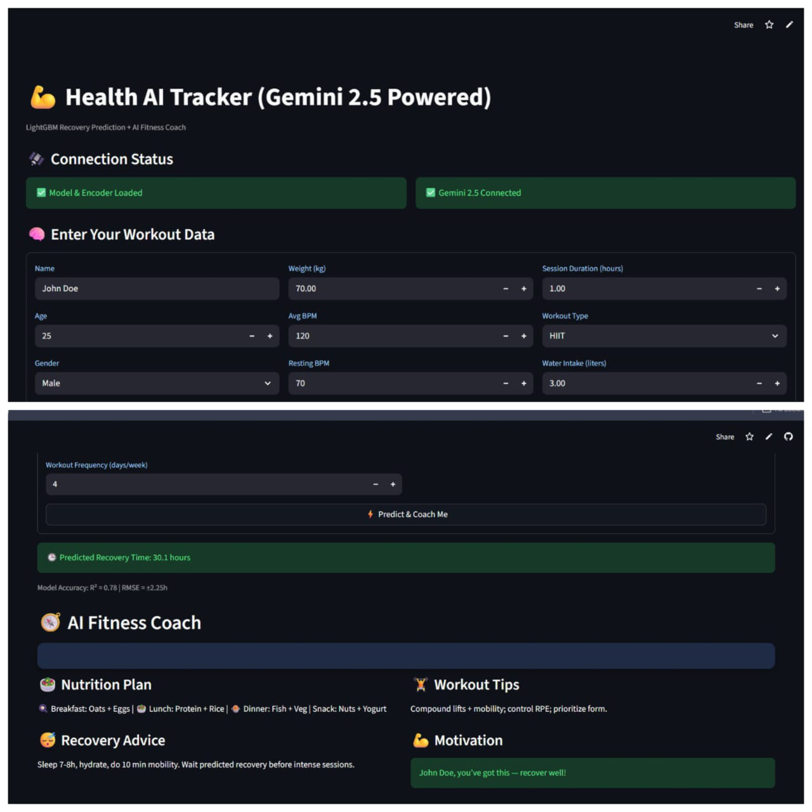
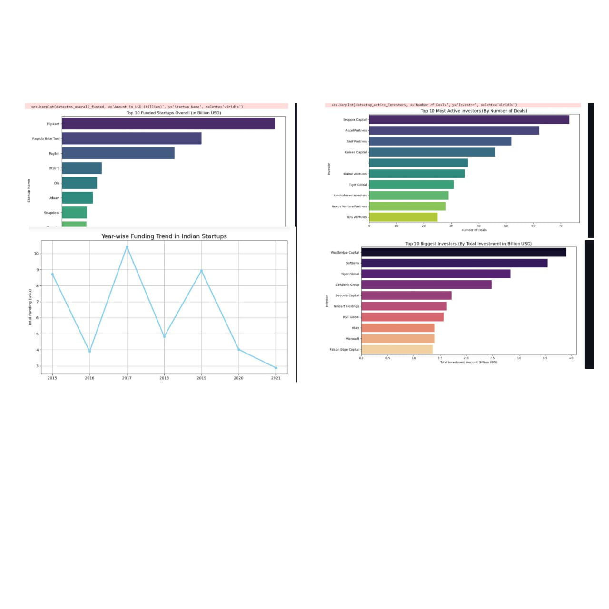

About Me
B.Tech Data Science student with strong hands-on experience building ML pipelines, performing feature engineering, training regression/classification models and deploying AI apps using Streamlit. Comfortable with LLM integrations for automation and coaching tools.
Skills
Projects

🛒 Walmart Sales Forecast
Random Forest forecasting model with feature engineering & visual dashboard.
GitHub Live Demo
📉 Telecom Churn Prediction
SMOTE handling + Logistic Regression classifier for churn risk scoring.
GitHub Live Demo

❤️ AI Health Recovery Tracker
LightGBM recovery model with Gemini-powered AI coach & JSON insights.
GitHub Live Demo

📊 Startup Funding Analysis
EDA study on $50B+ startup investments showing city & sector insights.
GitHub